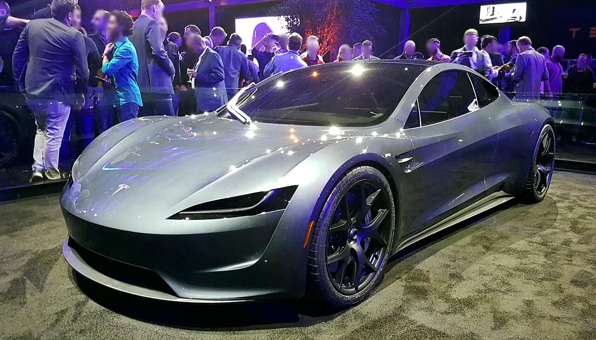
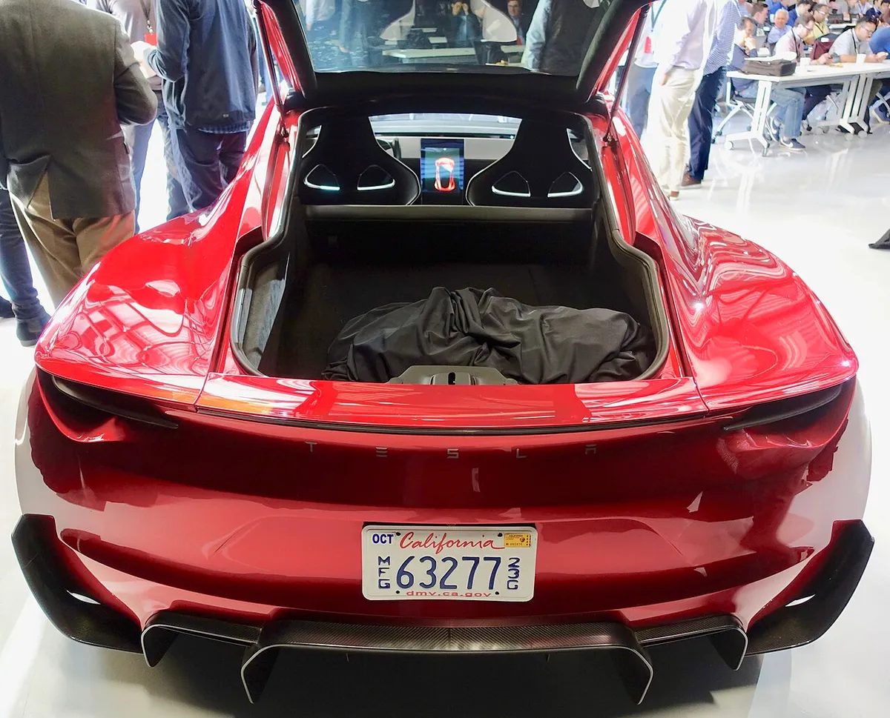
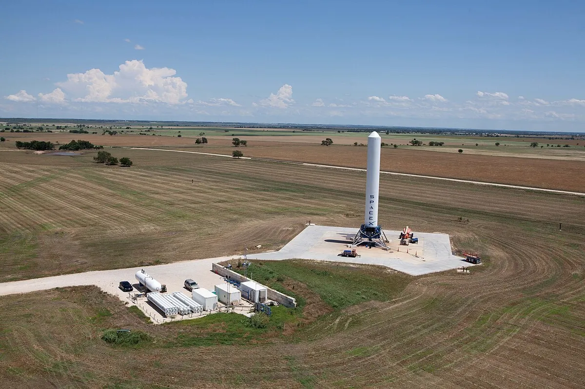
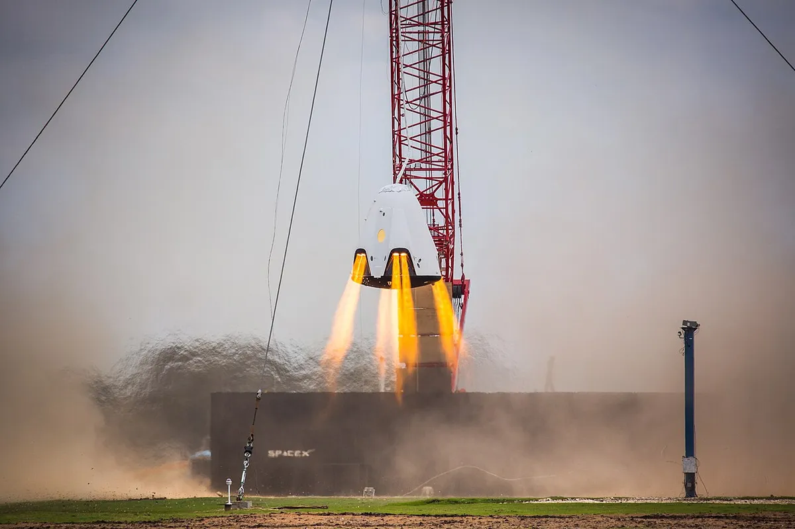
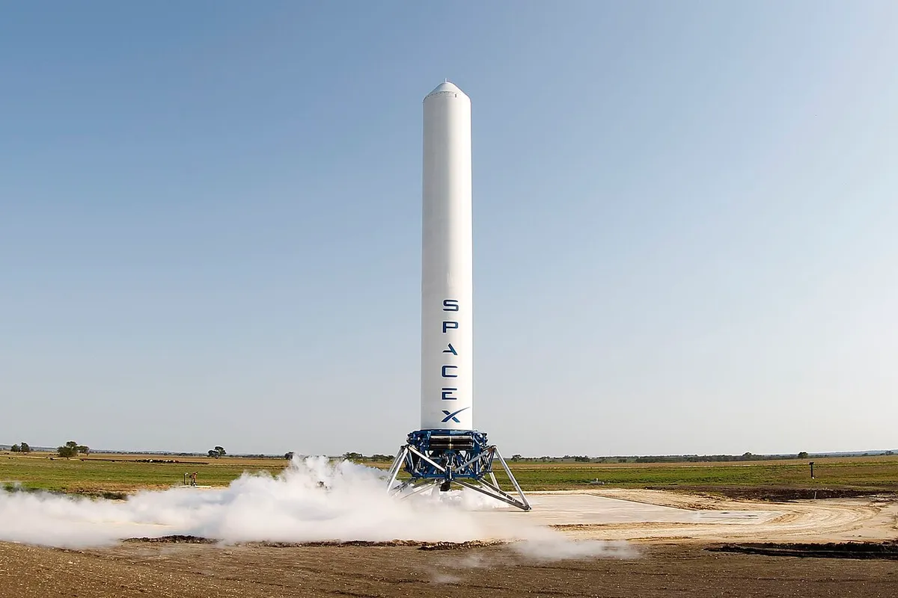
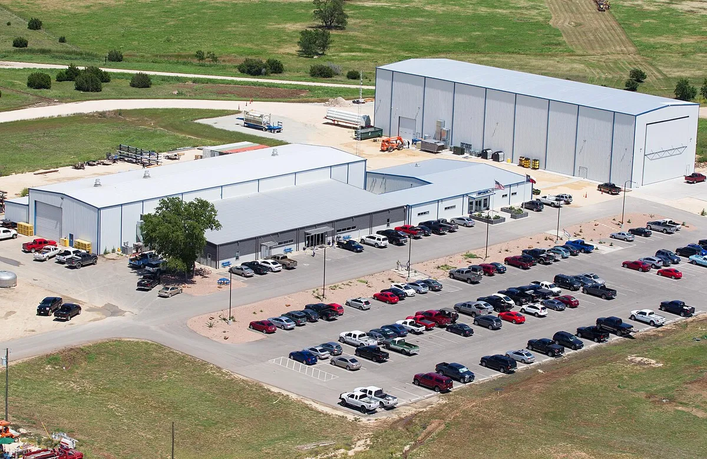
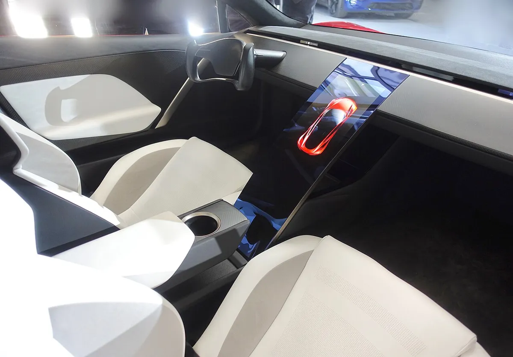

▲ 2017년 공개된 2세대 테슬라 로드스터 프로토타입. 9년이 지난 지금도 정식 시연은 계속 미뤄지고 있다 ⓒ Steve Jurvetson / Wikimedia Commons (CC BY 2.0)
"현지 기상 전문가들과 날씨를 계속 확인해 왔지만, 예보된 악천후가 심각하고 이 행사는 야외에서만 열 수 있어 어려운 결정을 내렸다." 테슬라가 차세대 로드스터 시연 행사를 10월 1일에서 10월 15일로 2주 미뤘다. 테슬라가 X에 올린 공지를 오토헤럴드, Electrek, TechCrunch, Motor1 등이 일제히 전했다. 같은 날 테슬라는 초대객에게 "Important: Roadster Event Weather"라는 제목의 이메일을 먼저 보내 일정 변경 가능성을 알렸고, 이때는 대체 날짜가 없었다고 Electrek은 전했다.
이미 카프리즘이 다뤘던 '10월 1일 공개' 예고가 이틀 앞으로 다가온 시점에 나온 연기 소식이다. 이번 기사는 새 일정 자체보다, 2017년 이후 이어져 온 '연기의 타임라인'과 이번 사유를 어떻게 읽어야 하는지에 초점을 맞췄다.
1. 무엇이 바뀌었나 — 10월 1일에서 10월 15일로
오토헤럴드에 따르면 테슬라는 "현지 기상 전문가들과 날씨를 지속적으로 확인했지만 심각한 기상 상황이 예상돼" 일정을 변경한다고 밝혔다. 행사의 핵심은 로드스터가 스페이스X의 냉가스(cold gas) 추진 장치로 지면에서 떠오르는 시연으로 알려져 있으며, Electrek·Motor1 등은 시연 시 차 안에는 아무도 타지 않고 관람객은 수백 야드 뒤에 물러서 있게 된다고 전했다.
| 항목 | 내용 |
|---|---|
| 기존 일정 | 2026년 10월 1일 |
| 새 일정 | 2026년 10월 15일 (2주 연기) |
| 공식 사유 | 중부 텍사스 악천후 예보, 행사는 야외에서만 가능 |
| 장소(보도 기준) | 텍사스주 맥그리거, 스페이스X 로켓 시험장 (웨이코 인근) |
| 사전 안내 | 9월 28일 초대객에게 "Important: Roadster Event Weather" 이메일(대체 일정 미제시) → 같은 날 X에서 10월 15일로 확정 |
| 10월 1일 예보 | 강수확률 82%, 뇌우, 돌풍 시속 약 30~32마일, 강수량 4인치 이상 |
| 시연 방식(보도 기준) | 스페이스X 냉가스 스러스터(코드명 A71)로 원격 조종 호버링, 관람객은 수백 야드 후방 |
| 양산 시기(회사 언급) | 2027년 또는 2028년 |
📍 '웨이코'냐 '맥그리거'냐 — 사실상 같은 곳
TechCrunch는 행사 장소를 "텍사스 웨이코"로, Electrek·오토헤럴드는 웨이코 외곽 맥그리거의 스페이스X 로켓 시험장으로 적었다. 맥그리거는 웨이코 인근 소도시로, 지역명과 구체적 장소의 표기 차이로 확인된다. 다만 테슬라 공식 공지 원문(X 게시글)에는 세부 주소가 없어 정확한 부지 표기는 확인하지 못했다.

▲ 2017년 11월 공개 당시의 2세대 로드스터 프로토타입. 이때 테슬라는 2020년 양산을 약속했다 ⓒ Smnt / Wikimedia Commons (CC BY-SA 4.0)
2. 반복된 연기 타임라인 — 2017년부터 올해 여섯 번째 날짜까지
로드스터의 '약속 파기'는 이번이 처음이 아니다. 2017년 11월 프로토타입을 처음 공개하면서 테슬라는 2020년 양산을 약속했지만 그 시점은 지나갔다. Electrek·TechCrunch·Motor1 보도를 종합하면 '플라잉 시연' 일정은 다음과 같이 바뀌어 왔다.
| 시점 | 내용 | 출처·비고 |
|---|---|---|
| 2017년 11월 | 2세대 프로토타입 공개, 2020년 양산 약속 | 2020년 양산은 불발 |
| 2025년 말 목표 | '플라잉' 시연을 2025년 말까지 하겠다는 목표 | Electrek·Motor1 요약. 미실시 |
| 2025년 11월 주주총회 | 머스크가 시연일을 2026년 4월 1일로 제시, "농담이었다고 할 수 있는 여지(deniability)"를 두려고 만우절로 잡았다고 언급 | Electrek·TechCrunch 등 |
| 2026년 3월 | '시연(demo)'에서 '공개(unveil)'로 표현을 바꾸고 일정을 4월 말로 조정 | Electrek 요약 |
| 2026년 4월 22일 | 1분기 실적 발표에서 "한 달쯤 뒤"라고 언급 | Electrek |
| 2026년 6월 5일 | 더 인포메이션이 익명 관계자 4명을 인용, 스페이스X 냉가스 스러스터 작업이 남아 8월 이후로 미뤄졌다고 보도 | 회사 공식 발표가 아닌 언론 보도 |
| 2026년 8월 14일 | "이르면 이달" 시연 가능성 보도(더 인포메이션 인용) | 실제 행사는 열리지 않음 |
| 2026년 10월 1일 | 텍사스 시연 이벤트 예고 | 악천후 예보로 연기 |
| 2026년 10월 15일 | 새 일정 | 진행 예정(미확정) |
Motor1은 10월 15일이 올해 테슬라 또는 일론 머스크가 이 차에 대해 제시한 여섯 번째 공개 날짜라고 집계했다. 4월 1일, 4월 말, '한 달쯤', 8월, 10월 1일, 10월 15일을 각각 센 것으로 보이며, 오토헤럴드도 같은 흐름으로 정리했다. 반면 Electrek은 6월 보도에서 2017년 프로토타입 공개 이후 최소 여덟 번째 일정 변경이라고 집계했다. 집계 기준이 달라 숫자가 다를 뿐 방향은 같다.

▲ 2017년 프로토타입의 후면. 당시 테슬라는 0-60mph 1.9초, 최고속도 250mph 이상을 내세웠다 ⓒ Steve Jurvetson / Wikimedia Commons (CC BY 2.0)
3. '악천후' 사유, 얼마나 설득력 있나
테슬라가 제시한 10월 1일 예보는 강수확률 82%, 뇌우, 시속 30~32마일(약 48~51km/h)의 돌풍, 4인치(약 100mm) 이상의 강수다. 무인 상태로 차를 지면에서 띄우는 시연이 야외에서 열린다면 뇌우와 돌풍은 분명한 위험 요소다. 번개를 동반한 폭우는 관람객 안전에도 직결된다.
✅ 연기 사유를 둘러싼 두 가지 시각
· 회사 입장: 예보가 심각하고 행사는 야외에서만 가능해 안전과 시연 성공을 위해 연기
· Electrek 분석: 10월 5~7일이면 날씨가 대체로 맑아질 전망인데 2주를 미룬 것은 이례적, 시연 자체의 기술적 과제를 손보는 시간일 수 있다고 추측
· 확인되지 않은 부분: 기술적 문제가 실제로 있는지는 테슬라가 밝힌 바 없으며 어디까지나 매체의 추정
즉 날씨 자체는 실제 예보에 근거한 사유로 보이지만, '왜 하필 2주인가'에 대해서는 회사의 설명이 충분하지 않다. 이 점은 반복된 연기 이력과 겹쳐 시장의 의구심을 키우는 대목이다.

▲ 스페이스X 로켓 개발 시설(맥그리거) 내 그래스호퍼 시험 부지. 개방된 평원이라 기상 영향을 그대로 받는다 ⓒ SpaceX / Wikimedia Commons (CC0)
4. 무엇을 보여주나 — A71 냉가스 스러스터와 '축소된' 시연
이번 시연의 핵심은 스페이스X와 함께 개발한 냉가스 스러스터 패키지(코드명 A71)다. 더 인포메이션을 인용한 Electrek 보도에 따르면 스러스터 시스템은 한정판 '스페이스X 로드스터' 변형에 뒷좌석을 대신해 약 10개의 냉가스 로켓 스러스터를 넣는 구성이다. 머스크가 과거 내세운 0-60mph 1.1초, 짧은 호버링 능력도 이 패키지를 전제로 한 주장이다.
✅ 시연 방식 (보도 기준)
· 무인·원격 조종: 차 안에는 아무도 타지 않음
· 관람객 수백 야드 후방: 스러스터 소음이 "고막을 손상시킬 수 있을 만큼" 커서
· 야외 전용: 그래서 우천·돌풍 예보가 곧 연기 사유가 됨
· 범위 축소: 당초에는 자기부상식 롤러코스터형 램프를 질주하고 거꾸로 주행한 뒤 바로 선 채 호버링하는 구상이었으나 규모가 줄었다고 보도됨

▲ 스페이스X의 드래곤 2 캡슐 호버 시험 장면(자료 사진). 로드스터 시연은 냉가스 스러스터를 쓰는 별개의 시연이다 ⓒ SpaceX / Wikimedia Commons (CC0)
📍 '스트리트 리걸'이 아닌 트랙 전용 한정판
Electrek(더 인포메이션 인용)에 따르면 스러스터를 얹은 한정판은 도로 주행이 불가능한 트랙 전용이며 가격은 수십만 달러 이상일 것으로 전해졌다. 페라리 XX 프로그램처럼 소수에게만 파는 모델을 본떴다는 표현도 있다. 이는 모두 회사 공식 발표가 아닌 보도 내용이다.
5. 왜 스페이스X 시험장인가 — 맥그리거의 로켓 개발 시설
스러스터 시연이 열리는 맥그리거 부지는 스페이스X의 로켓 엔진과 시험기를 오랫동안 시험해 온 개활지 시설이다. 공개된 사진에서 보듯 넓은 평원 위에 시험 패드와 건물이 흩어져 있어 소음과 안전거리를 확보하기에 유리한 반면, 지붕이 없는 개방된 공간이라 기상 영향을 그대로 받는다.
▲ 스페이스X 로켓 개발 시설(맥그리거) 내 그래스호퍼 시험 부지. 개방된 평원이라 기상 영향을 그대로 받는다 ⓒ SpaceX / Wikimedia Commons (CC0)

▲ 맥그리거에서 촬영된 스페이스X 그래스호퍼 시험 장면. 이 부지는 과거 로켓 이착륙 시험에도 쓰였다 ⓒ SpaceX / Wikimedia Commons (CC0)

▲ 스페이스X 맥그리거 로켓 개발 시설의 중앙 구역 전경 (공개 사진) ⓒ SpaceX / Wikimedia Commons (CC0)
6. 예약자와 양산 전망 — '시연'이 끝나도 1년은 더
TechCrunch에 따르면 테슬라는 로드스터 예약금으로 5만 달러를 받았고, 일부 고객은 25만 달러의 '파운더스 시리즈' 예약금을 냈다. 당시 기본 가격은 약 20만 달러로 제시됐다. 머스크는 10월 15일 공개 이후에도 양산 시작까지 최소 1년은 걸린다고 밝힌 것으로 TechCrunch는 전했다. 샘 올트먼이 자신이 예약한 차를 아직 못 받았다고 공개적으로 언급했고 머스크는 그가 환불을 받았다고 주장했다는 점도 함께 보도됐다.
| 항목 | 내용 | 출처 |
|---|---|---|
| 일반 예약금 | 5만 달러 | TechCrunch·Electrek |
| 파운더스 시리즈 | 25만 달러 (한정) | TechCrunch |
| 2017년 당시 기본가 | 약 20만 달러 (추정) | TechCrunch |
| 양산 시작 전망 | 10월 15일 공개 후에도 최소 1년 | TechCrunch (머스크 언급으로 전달) |
| 회사 공식 양산 시기 | 2027년 또는 2028년 | Motor1·Electrek |
5만 달러 예약금 재개에 대한 시장의 조롱은 "차는 없는데 또 7000만원"… 로드스터 예약금 재개에 쏟아진 조롱 기사에서, 지난 예고 국면의 정황은 로드스터 10월 1일 공개 예고 기사에서 다뤘다.
7. 그래서 무엇을 보게 될까 — 남은 궁금증
2017년 프로토타입은 붉은색 스포츠 쿠페였고, 실내는 흰색 시트와 가운데 세로형 화면이 특징이었다. 이번 10월 행사에서 시연 대상이 그때의 디자인 그대로일지, 스러스터를 얹은 한정판만 등장할지, 양산형 디자인이 새로 공개될지는 아직 공식적으로 확인되지 않았다.

▲ 2017년 프로토타입의 실내. 흰색 버킷형 시트와 중앙 화면이 눈에 띈다 ⓒ Steve Jurvetson / Wikimedia Commons (CC BY 2.0)
✅ 10월 15일 행사에서 지켜볼 포인트
· 날짜가 지켜지는가 — 올해 여섯 번째 날짜, 또 미뤄질 가능성은 없는지
· 무인 호버링이 실제로 성공하는가 — 냉가스 스러스터 시연의 안전성과 완성도
· 양산형 사양·가격 공개 여부 — 성능 수치 외에 가격, 인도 일정이 구체화되는지
· 예약금 고객 대응 — 2017년 예약자들에 대한 처리 방침이 언급되는지
8. 요약
테슬라는 로드스터 시연 행사를 10월 1일에서 10월 15일로 2주 연기했다. 공식 사유는 행사 장소(맥그리거 스페이스X 시험장으로 보도)에 예보된 82% 강수확률의 뇌우와 돌풍 등 악천후다.
이번은 올해만 여섯 번째 날짜라는 집계가 나올 만큼 연기가 반복돼 왔다. 2017년 "2020년 양산" 약속 이후 2025년 말, 2026년 4월 1일, 4월 말, 8월, 10월 1일로 일정이 이어졌고, 양산은 지금도 "2027년 또는 2028년"으로 안내된다.
날씨 사유는 예보에 근거하지만 2주라는 기간의 이유는 설명되지 않았다. Electrek은 기술적 사정 가능성을 제기했으나 이는 추측이고, 6월 이후 보도들은 스러스터 작업이 늦어진 것을 원인으로 짚어 왔다. 결국 10월 15일 시연이 실제로 열려야 로드스터의 다음 단계가 보일 전망이다.